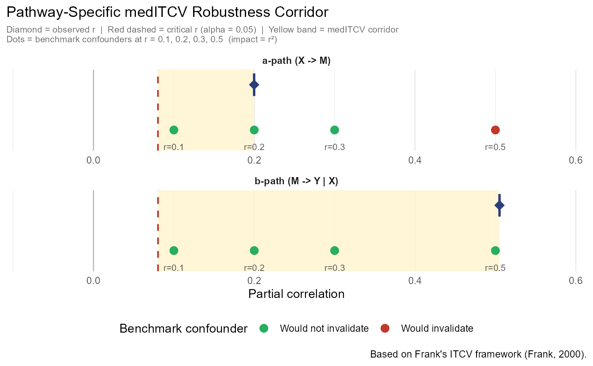

Computes a mediation-specific extension of Kenneth Frank's (2000) Impact Threshold for a Confounding Variable (ITCV) for both pathways of a mediation model:
a-path: treatment -> mediator
b-path: mediator -> outcome (controlling for treatment)
The mediation ITCV (medITCV) quantifies how strong an unmeasured confounder would need to be, in terms of the product \(r_{XC} \cdot r_{YC}\), to invalidate inference for each pathway.
Arguments
- x
A
robmedfitobject returned byrobustmediate().- alpha
Significance level. Default is
0.05.
Value
An object of class "meditcv": a named list with elements
a_path, b_path, indirect, and alpha. Each pathway element
contains the observed partial correlation, critical partial correlation,
medITCV value, and benchmark confounder impacts.
References
Frank, K. A. (2000). Impact of a confounding variable on a regression coefficient. Sociological Methods & Research, 29(2), 147–194.
Examples
# \donttest{
data(sim_mediation)
fit <- robustmediate(
X ~ Z1 + Z2, M ~ X + Z1 + Z2, Y ~ X + M + Z1 + Z2,
data = sim_mediation, R = 20, verbose = FALSE
)
#> Warning: `R < 50`; bootstrap intervals may be unstable.
med <- sensitivity_meditcv(fit)
print(med)
#> ╔══════════════════════════════════════════════════════════════╗
#> ║ medITCV: Mediation Robustness Report ║
#> ╚══════════════════════════════════════════════════════════════╝
#>
#> ── a-path (X -> M) (✓ significant) ──
#> Coefficient : +0.5195 (SE = 0.1043, t = 4.979, df = 596)
#> Observed partial r : 0.1998 | Critical r (alpha = 0.05) : 0.0802
#> medITCV = 0.1197 (+13.0% above threshold)
#> -> A confounder needs |r_XC x r_YC| > 0.1197 to invalidate this pathway.
#>
#> Benchmark impacts (r_confounder^2):
#> r = 0.1 -> impact = 0.01 ✓ would not invalidate
#> r = 0.2 -> impact = 0.04 ✓ would not invalidate
#> r = 0.3 -> impact = 0.09 ✓ would not invalidate
#> r = 0.5 -> impact = 0.25 ⚠ WOULD INVALIDATE
#>
#> ── b-path (M -> Y | X) (✓ significant) ──
#> Coefficient : +0.7165 (SE = 0.0502, t = 14.275, df = 595)
#> Observed partial r : 0.5051 | Critical r (alpha = 0.05) : 0.0803
#> medITCV = 0.4248 (+46.2% above threshold)
#> -> A confounder needs |r_XC x r_YC| > 0.4248 to invalidate this pathway.
#>
#> Benchmark impacts (r_confounder^2):
#> r = 0.1 -> impact = 0.01 ✓ would not invalidate
#> r = 0.2 -> impact = 0.04 ✓ would not invalidate
#> r = 0.3 -> impact = 0.09 ✓ would not invalidate
#> r = 0.5 -> impact = 0.25 ✓ would not invalidate
#>
#> ── Indirect effect (a x b) ──
#> Bottleneck pathway : a-path (X -> M)
#> Minimum-path medITCV : 0.1197
#> Fragility of the indirect effect is governed by the weaker pathway.
#> ────────────────────────────────────────────────────────────────
plot_meditcv(med)

# }